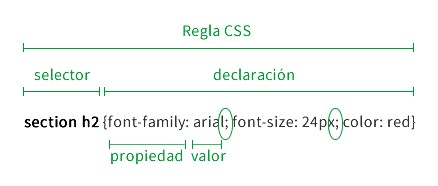

Las Hojas de estilo en cascada (Cascading Stylesheets CSS) Mientras que HTML se utiliza para definir la estructura y la semántica del contenido, CSS se usa para darle estilo y posicionarlo visualmente. CSS se puede usar, por ejemplo, para cambiar la fuente, el color, el tamaño y el espaciado del contenido, para formar multiples columnas, añadir animaciones y otros elementos decorativos.
Usando CSS se pueden controlar con precisión cómo se ven los elementos HTML en el navegador, que presentará para las etiquetas de marcado el diseño que cada uno desee.
El CSS es un lenguaje basado en reglas: cada usuario define las reglas que especifican los grupos de estilos que van a aplicarse a elementos particulares o grupos de elementos de la página web. Por ejemplo: «Quiero que el encabezado principal de mi página se muestre en letras grandes de color rojo».
